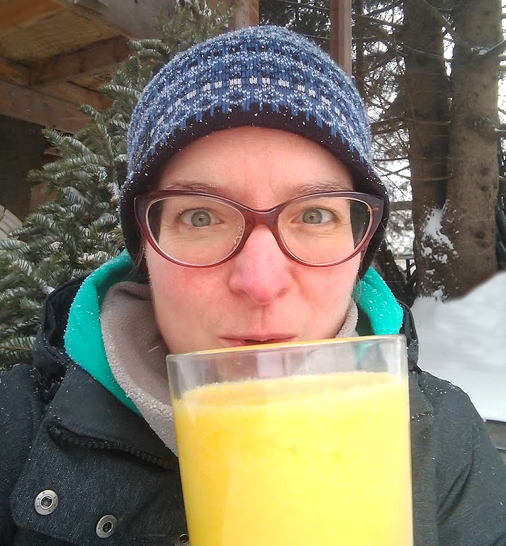
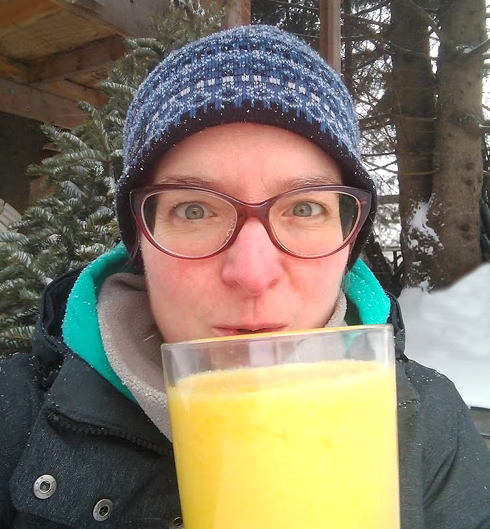

Everyone loves a bit of trail magic. Located one mile into the woods along the Lake Bonita trail in Saratoga County, NY. Enjoy a short hike or snowshoe -- during your workout, stop by for a drink! Sit inside the lean-to, or enjoy respite on a rock or log. Bring your trail mug in case you prefer a warm drink!